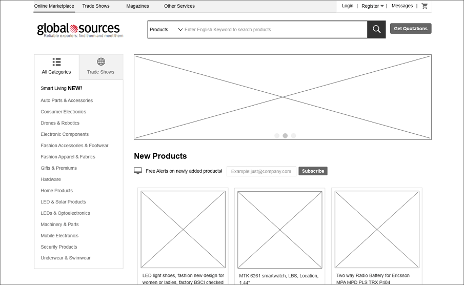

Internet
Wenn man über das Internet spricht, dann meint man die Vernetzung verschiedenster Rechner oder Server
auf unserer Welt. Darunter versteht man zum Beispiel "Webserver", auf dem die
von Ihnen besuchte Website liegt. Um diesen Webserver finden zu können, wendet sich der Browser
zunächst an den DNS-Server (Domain Name Service).
Diese Server können sich irgendwo auf unserer Erde befinden. Es sind sogenannte DNS-Server, welche dem
Browser mitteilen, wo die Website zu finden ist.
Das Internet verbindet Menschen, welche sehr weit ausseinander sind. Früher wurde das noch nicht so
wirklich ernst
genommen, aber heute ist das Internet ein sehr wichtiger Bestandteil der Menschheit.

Zugriff auf Website
Der Ablauf einer Anfrage für den Zugang auf einer Website ist simpel aufgebaut. Wenn man einen DNS-Namen
einer Website aufsucht, wird in dieser kurzen
Zwischenzeit eine Anfrage an einen DNS-Server in der Nähe geschickt, damit man weiss, wo sich der
gesuchte Webserver befindet und an welchem
Standort sich die gewünschte Website befindet.
Danach erfolgt eine Verbindung mit dem Web über einen Internetprovider. Um eine Website besuchen
zu können, muss deren Domänenname oder Webadresse in den Browser eingegeben werden. (z.B. google.com)
Im nächsten Schritt kommt der Computer an der Reihe. Der nimmt Kontakt mit dem Nertwerk des
DNS-Servers (Domain Name System) auf, Diese funkgieren als eine Art Telefonbuch und teilen
Ihrem Computer die IP-adresse mit, die zu dem angefordeten Domänenamen gehört.
Jedes Gerät, welches sich mit diesem Netzwerk verbunden hat, hat eine eigene spezifische IP-Adresse.
Diese IP-Adresse besteht aus zwölf Ziffern, die durch Punkte getrennt sind.
Die IP-Adressen kann mit mit unseren Telefonnummern unserer Handys vergleichen.
Über die eindeutige Nummer, welche der DNS-Server an den Rechner zurückgegeben hat, kann der Browser
Kontakt mit dem Webserver
aufnehmen, der die angeforderte Website enthält. Der Webserver ist ein Computer, welcher ständig mit
dem Web verbunden ist.
Er dient dazu, die Webseiten bereitzustellen.
Nach diesem langem Prozess wird dieser Vorgang "endlich" abgeschlossen. Der Webserver
sendet somit die angeforderte Seite an den Browser.

Entwicklungsumgebung
Eine Website wird hier und da verwendet. Die Entwicklungsumgebung ist sehr vielseitig.
Um so eine Website überhaupt erstellen zu können, verwendet man eine Beschreibungssprache.
Die aktuellste nennt sich "HTML 5".
Diese Beschreibungssprache muss in einem Programm angewendet werden. Beispielsweise
kennt man Brackets oder auch den Visual Code. Diese Programme nennt man "Editor".
Zudem gitb es auch Grafik-, Browser- und Webserverprogramme, welche selbsterklärend sind.
HTML
In HTML werden Elemente verwendet, damit man die Struktur einer Website beschreiben kann. Die Elemente werden auch "Behälter" genannt. Sie teilen uns etwas über die Infos zwischen ihrem öffnenden und schliessenden Tag mit.

Elemente
Eine Website wird strukturiert. Um diese Übersicht zu verdeutlichen
, braucht man mehrere Behälter. Die bekanntesten und die am meisten gebrauchten
Berhälter sind: <html>, <head> und <body>
Der Behälter <html> wird verwendet, um die Sprache der Website zu bestimmen.
Der <body> beinhaltet den ganzen Inhalt der Website. Nur das, was sich
im Body befindet, kann auf der Website schlussendlich erkannt werden.
Ein Element besteht aus einem öffnendem- und schliessendem Tag. Im öffnenden Tag ist das
Attribut und der Wert dieses Attributes stationiert. Mit dem Attribut spricht man die Eigenschaft an.
Mit dem Wert hingegen
wird definiert, was für Informationen und Einstellungen das Attribut haben soll.
Zwischen dem Anfangs- und Schlusstag befindet sich der Inhalt, welcher auf der Website schlussendlich
angezeigt wird.
Der schliessende Tag schliesst den ganzen Tag ab, sodass das nächste Element
nicht gestört werden kann.
Text
Besonderes Markup
Um eine gewisse Änderung an einem Inhaltsstück vornehmen zu können, muss man
diesen Bereich markieren. Hierfür verwendet man üblicherweise <class> und <id>.
<class> verwendet man, wenn man Kinderelemente hat und gewisse Einstellungen des Elternelements
darauf übernehmen möchte. <id> hingegen nutzt man, wenn nur ein Element vorhanden ist, welches
keine weiteren Elemente beinhaltet.
Weiter Markups die man häufig verwendet sind: Blockelemente und Inline-Elemente.
Sobald Elemente bei der Anzeige im Browserfenster immer in einer neuen Zeile beginnen, sind es
Blockelemente.
Beispiele für Blockelemente sind: <h1>, <p>, <ul> und <li>.
Wenn aber andere Elemente in derselben Zeile wie ihre Nachbarelemente stehen sind es Inline-Elemente.
Beispiele für Inline-Elemente sind: <a>, <b>, <em> und <img>.
Ein weiteres Element "<div>" wird auch sehr oft verwendet. dieses
nutzt man, um mehrere Elemente zu einem Block gruppieren zu können. Somit können Formatierungen
leichter vorgenommen werden.
Den Tag "<meta>" ist im <head> vorhanden. Er enthält die Informationen der Website
Es ist auch ein leeres Element. Dieses Element wird nur für die Infos für die Website verwendet,
darum können Benutzer das Element <meta> nicht sehen.
Listen
Man unterscheidet zwischen mehreren Arten: <ol>, <ul>, <dl> und Verschachtelte Listen.
Das erste Beispiel ist die geordnete Liste. In einer geordneten Liste macht man die Einträge Mit dem Element: <li>. Diese Liste heisst deshalb "geordnet", da hier nur nummeriert wird. Bei der <ul> (ungeordnete Liste) hingegen nutzt man Aufzählungssymbole, wie zum Beispiele Quadrate oder auch Kreise. Prinzpiell werden diese beiden Listen identisch eingerichtet.
Eine Definitionliste wird mit dem Element <dl> erstellt und bestehen normalerweise aus einer Abfolge von Begriffen mit den zugehörigen Definitionen. In einer Definitionsliste stehen gewöhnlich Paare aus <dt> und <dd> Elementen. Prinzipiell ist es hier das selbe wie bei den oberen Listen. Das <dt>-Element ist der Definitionsterm. Das <dd>-Element enthält die Definition des Begriffes.
Zum Schluss gibt es noch die Verschachtelte Liste. Das bedeutet so viel wie "Liste in einer Liste". Man erstellt eine liste (zum Beispiel <ul>) und erstellt in dieser nochmals zum Beispiel die genau gleiche Liste. Man muss diese Liste vor dem Endtag (in unserem Beispiel </ul>) erstellen. Nur so kann die verschachtelte Liste richtig funktionieren.
Formulare
Die Formulare sind mittlerweile ein Muss in unserer Gesselschaft. Es vereinfacht das Surfen
Im Internet. Ein gutes Beispiel wäre die Google-Suche. Sobald man dort etwas eingibt, kommen
sehr viele Artikel zum gesuchten Begriff.
Man unterscheidet zwischen drei Sorten: Text eingeben, Auswahl treffen und Formulare einreichen.
Beim Aufbau von Formularen nutzt man <form>. Jedes <form>-Element muss das Attribut action aufweisen. Sein Wert ist der URL de Seite auf dem Server, der beim Einreichen ds Formulars die Infos empfängt.
Formulare können mit get oder post gesendet werden. Der Unterschied liegt darin, dass bei "get" die Werte aus dem Formular an das Ende des URLs angehängt werden. Dies wird häufig für kurze Formulare. verwendet. Auch kann man diese Methode für das Abrufen von Daten vom Webserver verwenden. Bei Post hingegen werden die Werte in sogenannten HTTP-Headern gesendet. Post sollte man bei zum Beispiel langen Formularen einsetzen.
Mit <input> werden verschiedene Formularsteuerelemente erstellt, derren art durch den Wert des Attributs type bestimmt wird. Hierbei kann mit <size> die Grösse und mit <name> das Passwortfeld verändert werden.
Mit <button> kann man einen Knopf erstellen, welchem man Funktionen zuteilen kann. Wie zum Beispiel dass sobald man auf diesem Knopf draufklickt, man direkt zu einem Textabschnitt hingeführt wird. Zudem ist es kein leeres Element.
Mit dem Element "hidden" kann man ein Element ausblenden, jedoch wird dieses immer noch in der HTML-Datei angezeigt. Beim Aufrufen einer Website werden diese Elemente im Hintergrund ausgeführt.
Mit dem Element <label> kann man die Formulare benennen und so einstufen. Dieses Element hilft den sehbehinderten Benutzern. Mit dem Attribut <for> kann man angeben, welchem Steuerelement welche Beschriftung zugeordnet werden soll. Der Wert des Attributs <for> ist der id-Wert des Steuerelements, zu dem die Beschriftung gehört. Die Attribute <for> und <id> lassen sich für alle Formularsteuerelemente verwenden. Bei einem <label>-Element für eine Checkbox oder einen RadioButton können die Benutzer zur Auswahl sowohl auf das eigentliche Steuerelement als auch auf die Beschriftung klicken. Somit kann das Formular leichter ausgefüllt werden.
Flash, Video & Audio
Um Flash-Filme zu einer Website hinzufügen zu können, muss man das Element <div> nutzen.
Dieses Script nennt sich "SWFObject." Man kann es konstenlos von Google beziehen. Somit kann
man auf Webseiten Animationen, Video- und Audioinhalte wiedergeben.
Für HTML5 kamen neue Elemente, mit denen man Audio- oder Videoinhalte hinzufügen kann.
Die Elemente sind: <video> und <audio>.
Da diese Elemente neu sind, können sie nicht an alle Browser genutzt werden. Darum sollte man
möglichst immer diese zwei Formate nutzen: H264 (IE und Safari) und WebM (Android, Chrome, Firefox,
Opera).
Die meist genutzten Attributen für das Element <video> sind "src" und "width, height".
Mit dem Attribut "src" gibt man den Pfad der Videodatei an (H264 und
WebM).
Die Attribute "width" und "height" sind für die Breite und die Höhe gedacht.
Bei dem Element <audio> gibt es auch mehrere Attribute. Die wichtgsten Attribute sind "src",
"type" und "controls".
Mit "src" wird der Dateipfad angegeben. Mit "controls" können Steuerelemente hinzugefügt werden.
Weitere Attributen welche es noch gibt sind: "preload", "loop", "autoplay" und "loop".
Wenn man mehere Audioquelllen angeben möchte, muss man das Element <source> benutzen.
Dieses Element kommt zwischen den beiden Tags <audio> und </audio> (statt des Attributs
"src" im öffnenden <audio> Tag). Hier gibt es zwei Attribute: "src" und "type".
Mit "src" gibt man den Pfad der Datei an und mit "type" das Format der Audiodatei.
Bilder
Das Element für das Einfügen von Bildern ist <img>. Die Attribute für dieses Element, welche
üblich sind lauten: "src", "alt", "title", "height" und "width".
Mit "src" wird dem Browser gesagt, wo sich das Bild befindet. Normalerweise wird ein relativer URL
genutzt.
"alt" nutzt man, um das Bild zu beschreiben, falls es nicht dargestellt werden kann. Zudem sollte
es auch eine Hilfe für Sehbehinderte sein, damit die genau wiessen, um was es auf diesem Bild gehen
würde.
Die Grössen können mit den Attributen "height" und "weight" spezifisch angepasst werden.
Früher nutzte man das Attribut "align", damit man das Bild horizontal ausrichten konnte. Zudem gab man damit an, wie sich der Rest des Elementes verhalten hätte sollen. Dieses Attribut kann folgende Werte beinhalten: "left" und "right".
Um Bilder vertikal ausrichten zu können, nutzte man dasselbe Attribut nur mit anderen Werten. Die Werte sind: "top", "middle" und "bottom".
- Bilder im richtigen Format speichern
- Die Bilder in der richtigen Grösse speichern
- Richtige Auflösung verwenden
Für das Bearbeiten von Bildern gibt es verschiedenste Methoden und Programme. Die bekanntesten sind: Adobe Photoshop, GIMP und Paint.
Falls ein Bild sehr viele verschiedene Farben haben sollte, wäre hier das JPEG Format ideal. Wenn eine Farbe auf einer grossen Fläche erkannt werden kann, wirk das so, als beinhalte es nur eine Farbe. Im Hintergrund jedoch befinden sich viele verschiedenen Farben, welche sich um Nuancen unterscheiden.
Wenn man einen Bildbereich hat, welcher durchgängig mit einer gleichen Farbe ausgefüllt ist, dann spricht man von "flachen Farben". Beispiele Dafür sind: Logos, Zeichungen und Diagramme. Wenn diese Aussagen zutreffen, sollte man die Formate GIF und PNG nutzen.
Wenn man eine Unterschrift mit einem Bild zusammenhängen möchte, muss man im aktuellen HTML5 das
Element
<figure> nutzen. Wenn man eine Unterschrift mit mehreren Bildern teilen möchte, können
mehrere Bilder im gleichen Element stehen.
Mit dem Element <figcaption> kann man den Bildern eine Unterschrift zuteilen.
Links
Um Links einzufügen, wird das Element <a> genutzt. Zudem gehört das Attribut "href" dazu. Dies
führt dann
zu der Seite, auf welcher hingewiesen wurde. Führt der Link zu einer anderern Website, muss der Wert
von
"href" die komplette Webadresse dieser Seite angeben. Dies ist ein absoluter URL. Wenn sich aber alle
Seiten der Website im selben Ordner befinden,
dann ist der Wert für das Attribut "href" der Dateiname der Seite.
Relative URLs sind darum nützlich, weil man zwischen den Seiten Links aufbauen kann, ohne einen
Domänenamen einzurichten oder
für das Hosting zu denken.
Die Verzeichnisstruktiur ist bei grösseren Websiten sehr wichtig, da die Gliederung im Vordergrund
steht
und somit die Übersicht beibehalten werden kann.
Es fängt mit dem Wurzelordner (Grosselternordner) an, welcher alle Dateien und Ordner der Website
beinhaltet.
Danach folgen folgenden Ordner: Elternornder, Enkelordner, Kinderordner, derselbse Ordner
Email-Links ist eine Sache, welche sehr oft genutzt wird. Das Element, welches hierfür genutzt wird nennt sich "mailto". Hier wird prinzipiel das gleiche genutzt wie auf dem Bild. Hier wird anstatt der Pfad die E-Mail genutzt.
Wenn der Link die Zielseite in einem neuen Fenster öffnen soll, kann man im öffnenden <a>-Tag das Attribut "target" verwenden. Der Wert soll "_blank" heissen.
Um einen Link auf der selben Seite verweisen zu können, muss man das Zeichen # nutzen. Dies nutzt man nur, wenn eine ID genutzt wurde, keinestfalls auf CLASS.
Tabellen
Eine Tabelle wird mit dem Element <table> erstellt.
Die Inhalte der Tabelle werden Zeile für Zeile geschrieben.
Mit dem Element <tr> Wird eine Tabellenzeile gemacht. Darauf
folgt jeweils ein <td> Element für jede Zelle in der Zeile. Am Ende
der Zeile kommt das schliessende </tr>-Tag.
Die EInzelnen Zellen werden durch <td> Elemente dargestellt.
Das "td" steht für "Tabellendaten". Am Schluss kommt das schliessende Tag </td>.
Tabellenüberschriften werden mit dem Element <th> gemacht. Es wird ebenso verwendet
wie <td>, steht aber für die Überschrift einer Spalte oder Zeile.
Wenn kein Inhalt vorhanden ist, muss man das Element <td> oder <th>
nutzen, sodass das Vorhandensein der leeren Zelle in der ersten Zeile.
Mit dem Attribut "scope" von <th> wird angegeben, für welche Spalte oder Zeile
die Überschrift zuständig sind.
Mit dem Attribut "colspan" können Spalten zusammengeführt werden.
Bei Zeilen verwendet man das Attribut "rowspan".
Wenn man lange Tabellen hat, kann man eine solche Tabelle in drei teilen unterteilen: <thead>, <tbody> und <tfoot>. Diese Elemente können sehr nützlich sein, da sie den Benutzern, welche Sreenreader nutzen, sehr hilfreich sind. Zudem können diese Abschnitte anders gestalten werden als der Rest der Tabelle.
CSS
CSS ist eines der wichtigsten Bestandteile der Website. Man nutzt es, um die Elemente und derren
Inhalt zu gestalten.
Beispiele: Hintergrundfarbe, Schriftart, Abstand zum Rand etc.
CSS einbinden
Mitlerweile gibt es zwei Arten, wie man mit CSS arbeiten kann. Entweder direkt im HTML-File mit dem Element <style>, oder mit einem externen CSS-File. Wenn man ein CSS-File einbinden möchte, muss im Element <head> folgendes stehen:

CSS-Regel

Selektoren
Es gibt verschiedene Arten von CSS-Regeln, mit denen man Regeln gezielt auf bestimmte Elemente in einem HTML-Dokument anwenden können. Auf dem folgenden Bild sind sie aufgetragen:
Text
Mit der Eigenschaft "font-family" kann man die Schriftart ändern. Die Schriftgrösse kann mit "font-size geändert werden. Dabei muss man den Wert in Pixel, Prozentwerte oder auch EM angeben. Wenn man eine Schriftart möchte, welche auf dem eigenen Computer nicht vorhanden ist, jedoch auf einer Website, dann muss "@font-face" genutzt werden. Mit "src" gibt man die URL an, mit dem "format" das Format, indem die Schriftart vorliegt. Mit "font-weight" kann man einen Text fetten. Es gibt zwei Optionen: bold und normal Mit "font-style" kann die Art einer Schriftart angepasst werden Bsp: italic (kursiv) Mit "text-transform" kann man zwischen Gross- und Kleinbuchstaben umschalten. Mit "line-height" kann man die Höhe zwischen zwei Zeilen bestimmen. Mit "text-align" kann man die Ausrichtung des Textes festlegen. Mit "vertical-align" kann die vertikale Ausrichtung bestimmt werden.
Google Fonts
All Informationen zu diesem Kapitel sind auf folgender Website zu finden:
Farbe
All Informationen zu diesem Kapitel sind auf folgender Website zu finden:
Kästen
Ein Kasten wird in drei verschiedene Kategorien unterteilt. Zum einen fängt es mit dem Padding an, welcher den Innenraum
eines Kastens beschreibt. Danach folgt die Border, welche der Rand des Kastens darstellt. Zum Schluss
ist noch der Aussenrand (margin) vorhanden, welcher den Aussenraum einnimmt.
Die Eigenschaften "pading" und "margin" sind sehr nützlich, um Abstände zwischen den einzelnen Elementen auf einer Seite
einzuräumen.

Der Kasten ist standardmässig gerade mal gross genug für seinen Inhalt. Mit den Eigenschaften "height" und "width" kann man die Abmessungen eines Kastens festlegen.
Sehr nützliche Funktionen können auch die Einschränkungen von der Höhe und der Breite sein.
Dies hat den Vorteil, dass man die Grösse der Fenstergrösse anpassen kann.
Für die Breite nutzt man folgende Eigenschaften:
"min width", "max-width"
Für die Höhe nutzt man folgende Eigenschaften:
"min-height", "max-height"
Mit der Eigenschaft "display" kann man Inline- in Blockelemente umwandeln und umgekehrt.
Ausserdem ist es damit möglich, Elemente auf der Seite auszublenden.
Diese Eigenschaft kann folgende Werte annehmen:
"inline", "block", "inline-block" & "none"
Es gibt viele weitere Eigenschaften und Werte, welche man noch nutzen kann. Diese sind auf folgender
Website zu finden:
Listen, Tabellen & Formulare
Liste
Ein Liste kann verschiedenster Arten bestehen. Normalerweise nutzt man Nummerierungen, Auflistungen und Definitionslisten.
Wenn man Aufzählungspunkte gestalten möchte, dann nutzt man "list-style-type",
Wenn man Aufzählungspunkte aus Grafiken haben möchte, dann ist "list-style-image" zu nutzen.
Um Aufzählungspunkte positionieren zu können, muss man die Eigenschaft "list-style-position" brauchen.
Tabelle
Wie bei vielen anderen Eigenschaften kann man auch hier viele gleichartige Werte einsetzen. Zum einen gibt es "width" & "height", zum anderen auch "background-color" etc. Einige neue gibt es aber:
Es gibt die sogennante "empty-cells"-Eigenschaft, welche man braucht, um den leeren
Zellen den Rahmen ein- oder auszublenden. Folgende drei Werte werden hierbei genutzt:
"show", "hide" & "inherit"
Inherit wird genutzt, um den Tabellenzellen mitzuteilen, dass sie den Regeln für die umfassende Tabelle
gehorchen sollen.
Eine weitere Veränderung, welche man an der Tabelle anrichten könnte, wäre der Abstand zwischen den Zellen. Dieser wird mit den Eigenschaften "border-spacing" und "border-collapse" angepasst.
Formulare
Mit CSS kann auch zudem die Darstellungsart von Formularen verändert werden, dazu gehören z.B. die Schalt
flächen usw.
Alle Infos hierzu sind auf folgender Seite zu finden:
https://www.webmaster-crashkurs.de/formulare-ueber-css-gestalten.htm
Bilder
Wie auch bei vielen anderen Eigenschaften gibt es hier die Werte "height" und "width" ebenfalls. Mit diesen Werten kann man einem Bild die Grösse anpassen. Mit diesen Entstellungen kann auch das Laden der Website deutlich verschnellern, da die Website schon daher im Voraus bescheit bekommt, wie sie sich verhalten soll.
Um diese Werte einsetzen zu können, muss man das Bild natürlich ansprechen. Dies tut man entweder, indem man die "class" oder "id" oder das Bild ("img.wert") anspricht.
Mit der Eigenschaft "float" kann man die Bilder fliessen lassen und positionieren. Somit kann man zum Beispiel sagen, dass das Bild neben oder unterhalb dem Text fliessen soll.
Mit der Eigenschaft "background" kann der Hintergrund nach Belieben angepasst werden. Die wesentlichsten Werte dazu sind: "position" und "color"
Weitere Informationen zu diesem Kapitel sind auf dieser Seite zu finden:
https://www.html-seminar.de/css_bilder_und_hintergrundbilder.htmFlexbox
All Informationen zu diesem Kapitel sind auf folgender Website zu finden:
Media Queries
All Informationen zu diesem Kapitel sind auf folgender Website zu finden:
Praxis
Wireframe
Ein Wireframe ("Drahtmodell") ist eine einfache Skizze der wichtigsten Informationen, die auf die einzelnen Seiten einer Website gehören. Sie zeigt die Hierarchie der Informationen und den dafür benötigten Platz.
Unter dieser Website kann man ein Wireframe erstellen:
Sitemap
Unter dieser Website kann man eine Sitemap erstellen:
Layout in HTML
Der Überblick beim Aufbau einer Website ist überaus wichtig. Darum kann man gewisse Bereiche in Abschnitte unterteilen. Wenn man CSS in HTML einbinden möchte, dann möchte man ja nicht, dass der Code auf der Website angezeigt werden soll. Darum schreibt man den Code im <head>. Den Hauptteil einer Website kommt in den <body>. Am Schluss kommt der <footer>, welcher alle restlichen Informationen aufsammelt (Kontaktinformationen etc.).
Die Details sind auf dieser Website zu finden:
https://www.w3schools.com/html/html_layout.asp

Validierung
Die Validierung wird häufig gebraucht. Mit der Validierung kann man den ganzen HTML- sowie den CSS-Code nach Fehler überprüfen, sodass man sicher sein kann, dass die Website korrekt funktioniert.